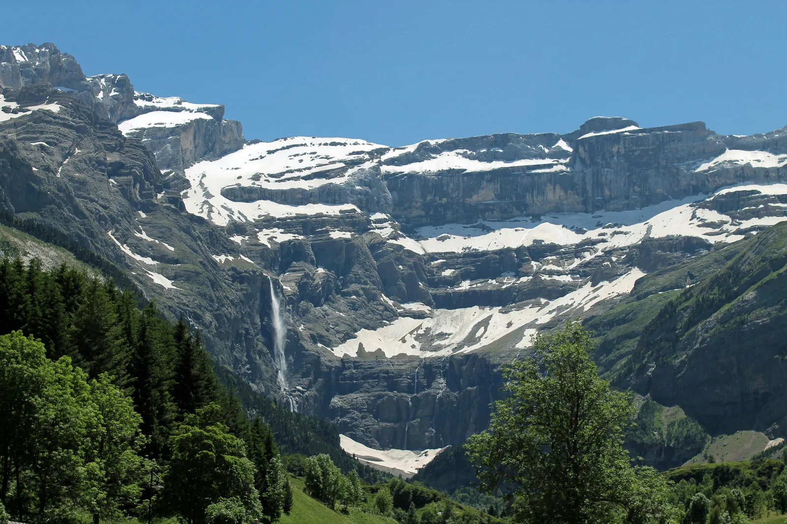

🏔️
Cirque de Gavarnie
Le Cirque de Gavarnie est l’image d’appel la plus évidente : un repère naturel mondialement connu qui influence directement l’imaginaire du séjour.
À Gavarnie-Gèdre, une location saisonnière ne se vend pas uniquement par sa surface ou ses couchages. Elle se lit à travers un territoire exceptionnel : Cirque de Gavarnie, Brèche de Roland, cirques de Troumouse et d’Estaubé, Parc national des Pyrénées, ski familial, randonnées d’altitude et séjours nature. LocPilot aide les propriétaires à rendre cette valeur plus claire, plus visible et plus cohérente en ligne.
À Gavarnie-Gèdre, le bien doit être présenté comme un point d’ancrage vers une destination très identifiée. Le propriétaire ne doit pas seulement montrer un logement : il doit aider le voyageur à comprendre ce qu’il va vivre, à quelle saison, avec quel niveau d’accès et pour quel type de séjour.
Le Cirque de Gavarnie est l’image d’appel la plus évidente : un repère naturel mondialement connu qui influence directement l’imaginaire du séjour.
La Brèche de Roland attire les voyageurs sportifs, les randonneurs d’altitude et les amateurs de grands paysages pyrénéens. C’est un marqueur fort à intégrer avec prudence.
Les cirques de Troumouse et d’Estaubé renforcent la logique de grands sites, de nature, de pastoralisme, de randonnées et de séjours d’exploration.
Le cœur de Gavarnie, Gèdre, les accès, le stationnement, les départs de randonnée et les services disponibles doivent être expliqués simplement.
La station de Gavarnie-Gèdre apporte une promesse neige différente des grands domaines : plus familiale, plus paysagère, plus contemplative.
Été, automne, neige, courts séjours, photographie, randonnée et déconnexion : la page doit parler à plusieurs profils de voyageurs, pas seulement aux skieurs.

Les chiffres ne remplacent pas l’analyse du bien, mais ils aident à comprendre pourquoi la destination mérite une présentation locale soignée et différenciante.
Gavarnie-Gèdre regroupe les cirques de Gavarnie, Troumouse et Estaubé, au cœur d’un territoire reconnu UNESCO, Grand Site Occitanie et Parc national des Pyrénées.
Source Vallées de GavarnieL’itinéraire principal vers le Cirque de Gavarnie permet de découvrir la grande cascade, annoncée à 417 m, sur un parcours classique et très identifié par les visiteurs.
Source Rando ValléesLa Brèche de Roland est un itinéraire d’altitude exigeant, dont l’accès dépend fortement des conditions, avec une période optimale courte pour les randonneurs non équipés neige/glace.
Source Rando ValléesLa station de Gavarnie-Gèdre annonce 24 pistes, 32 km de pistes alpines, 7 remontées mécaniques et une altitude comprise entre 1 820 m et 2 322 m.
Source StationL’INSEE indique une progression de la fréquentation estivale 2025 en Occitanie, avec 47,2 millions de nuitées et une dynamique positive dans les Pyrénées.
Source INSEEDans une destination aussi connue, le logement doit être rattaché à des repères clairs : accès, départs de randonnée, distance au village, stationnement, saison et usage du séjour.
L’enjeu est de faire comprendre au voyageur ce qu’il va vivre concrètement : accès au cirque, Brèche de Roland, calme du village, proximité des départs, vue, stationnement, confort après randonnée, séjour familial, hiver naturel ou base de découverte des grands sites.
Le territoire attire déjà. Le vrai sujet consiste à transformer cette attractivité en une lecture claire du bien, de son usage et de son parcours de réservation.
Gavarnie, Gèdre, proximité du village, accès au cirque, départs de randonnée ou distance à la station : chaque emplacement raconte une promesse différente.
Photos, vue, extérieur, accès, stationnement, ambiance vallée et immersion doivent aider le voyageur à se projeter sans ambiguïté.
Familles, randonneurs, skieurs, photographes, couples ou groupes ne cherchent pas la même information. Le contenu doit parler à ces usages.
L’été n’a pas la même logique que l’hiver, l’automne ou les courts séjours hors vacances. Le calendrier doit être lu période par période.
Un site ou une page dédiée peut compléter les plateformes, rassurer le voyageur et créer un point d’appui propriétaire mieux maîtrisé.
Les annonces, prix, contrats, encaissements et obligations restent sous la responsabilité du propriétaire. LocPilot intervient sur la structuration et la visibilité.
Il doit expliquer ce qu’il permet : rejoindre les grands sites, préparer une randonnée, profiter de la neige, séjourner au calme, rayonner vers Luz, Barèges ou le Pays Toy, ou vivre une expérience montagne plus immersive. C’est cette précision qui donne de la valeur au bien.
LocPilot n’a pas vocation à remplacer le propriétaire ni à gérer ses encaissements. L’objectif est de structurer une présence plus claire, plus cohérente et plus utile pour développer la visibilité locale et le canal direct.
Construire une lecture locale autour de Gavarnie-Gèdre, du Cirque de Gavarnie, de la Brèche de Roland, des grands sites et des usages voyageurs.
Clarifier ce que le bien permet réellement : séjour randonnée, famille, ski, nature, courts séjours, déconnexion ou base de vallée.
Mettre en avant les éléments qui créent la projection : vue, accès, ambiance, extérieur, confort, stationnement, environnement et expérience.
Structurer un parcours complémentaire aux OTA, avec des contenus propriétaires plus précis et des appels à l’action mieux maîtrisés.
Organiser les briques techniques : moteur de réservation, liens OTA, channel manager, messages, suivi et cohérence des points de contact.
Aider à comprendre où la dépendance aux plateformes pèse sur la rentabilité et quels leviers peuvent être structurés progressivement.
LocPilot intervient dans un cadre de conseil, de visibilité locale, de structuration digitale, de configuration d’outils et de prestation de services. Le propriétaire reste seul décisionnaire et responsable de ses annonces, prix, réservations, contrats, encaissements et obligations réglementaires.
L’objectif est simple : passer du potentiel de la destination aux actions concrètes à mettre en place pour améliorer la visibilité du bien, structurer ses réservations et réduire sa dépendance aux plateformes.
Replacer Gavarnie-Gèdre dans la stratégie globale des destinations montagne, nature, vallée et grands sites du département.
Lire la page 65Relier Gavarnie-Gèdre à la porte d’entrée naturelle du Pays Toy, au thermalisme, aux services et aux séjours vallée.
Voir Luz-Saint-SauveurRelier Gavarnie-Gèdre à la base de vallée qui connecte Lourdes, Cauterets, Luz, le Val d’Azun et les grands sites pyrénéens.
Voir Argelès-GazostRelier Gavarnie-Gèdre à Lourdes, porte d’entrée touristique, spirituelle et internationale vers les grands sites pyrénéens.
Voir LourdesComparer Gavarnie-Gèdre à une autre destination montagne, thermale, randonnée et nature des Vallées des Gaves.
Voir CauteretsConnecter Gavarnie-Gèdre au Pays Toy, au Grand Tourmalet, au ski, au thermalisme et aux séjours montagne.
Voir BarègesVoir comment un bien peut être mieux compris par Google, les voyageurs et les moteurs IA.
Lire le guide SEO/GEOStructurer un canal complémentaire aux OTA, sans confusion ni promesse excessive.
Lire le guide directComprendre le périmètre d’intervention LocPilot et les responsabilités qui restent côté propriétaire.
Lire la FAQOui. Gavarnie-Gèdre fait partie des localités stratégiques dans les Hautes-Pyrénées, notamment pour les biens liés au village, au cirque, à la randonnée, à la station de ski, aux séjours nature et aux grands sites.
Parce que la destination ne se résume pas à une station ou à un village. Elle combine Cirque de Gavarnie, Troumouse, Estaubé, Brèche de Roland, patrimoine mondial UNESCO, Parc national des Pyrénées, ski, randonnée et séjours quatre saisons.
Oui, si le bien s’adresse à des voyageurs sensibles à la randonnée, aux paysages d’altitude et aux grands itinéraires pyrénéens. La Brèche de Roland est un repère fort, mais elle doit être présentée avec prudence : son accès dépend des conditions, de la saison, de l’équipement et du niveau des voyageurs.
Oui, en complément des plateformes. Dans une destination à forte notoriété, un canal direct bien cadré peut aider à mieux présenter l’expérience, rassurer les voyageurs et réduire progressivement la dépendance aux OTA.
Non. LocPilot ne garantit ni les réservations, ni la position Google, ni la validation d’une fiche par Google. L’accompagnement vise à améliorer la lisibilité, la cohérence, la visibilité locale et la qualité du dispositif digital.
Faisons un premier point sur votre bien, votre emplacement, votre présence actuelle, vos canaux et les leviers les plus pertinents pour mieux raconter l’expérience voyageur.